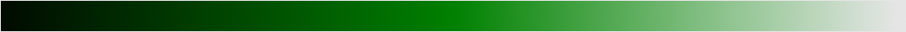

Color is used in design to attract attention, group elements, indicate meaning and enhance aesthetics. Colors are powerful!
We can distinguish
Remember! There are warm and cold colors. Warm ones pop on a background more.
Monochromatic - using one hue and its tints and shades.
| Color | Positives | Negatives | Use in Design |
|---|---|---|---|
| Red | action, power, passion | anger, violent, irritation | errors, warnings, "buy now" |
| Orange | vibrant, warm, creative | cheap, overly proud | use to suggest adventure, fun and optimism |
| Yellow | happy, fun, logic | critical, impatient | use as an accent color, use for fun sites |
| Green | health, peace, nature | greedy, envious | eco-friendly products, to suggest sth new or fresh |
| Blue | loyalty, trust, authority | predictable, rigid | use for high-tech business, professional sites |
The best way of combining colors is to use the below color wheels
By Agata Piekarczyk
Use and combine colors purposefully. Limit their number (5 or less). Remember that some people are color blind so don't rely only on colors.